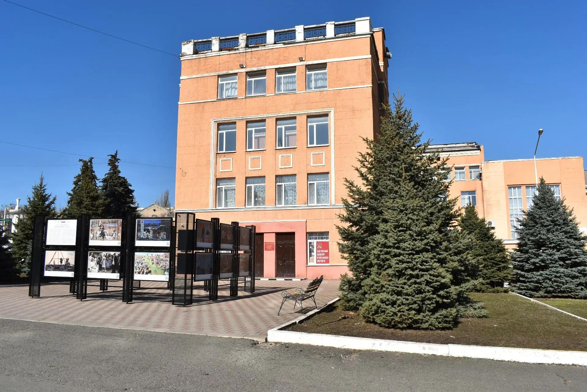
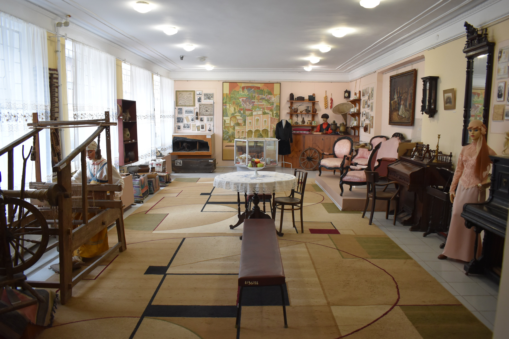
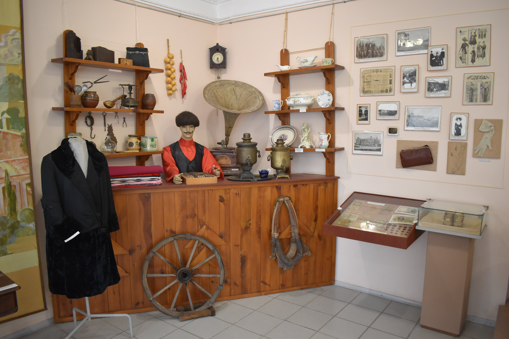
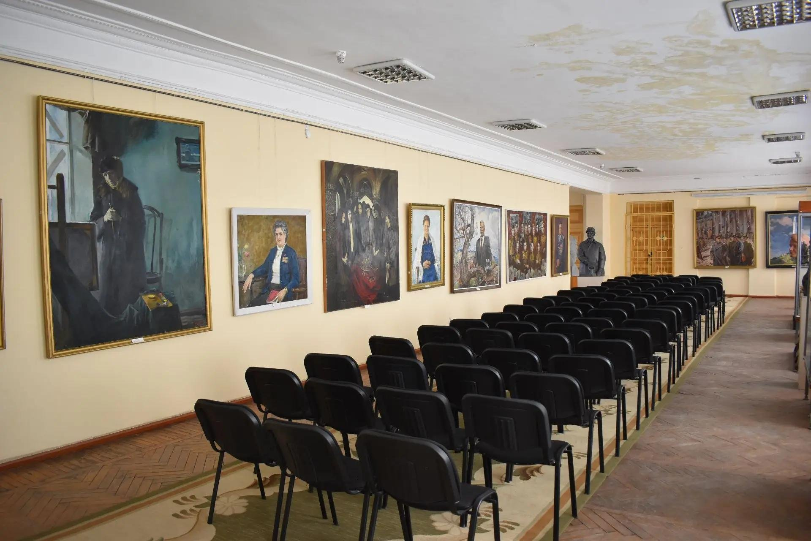
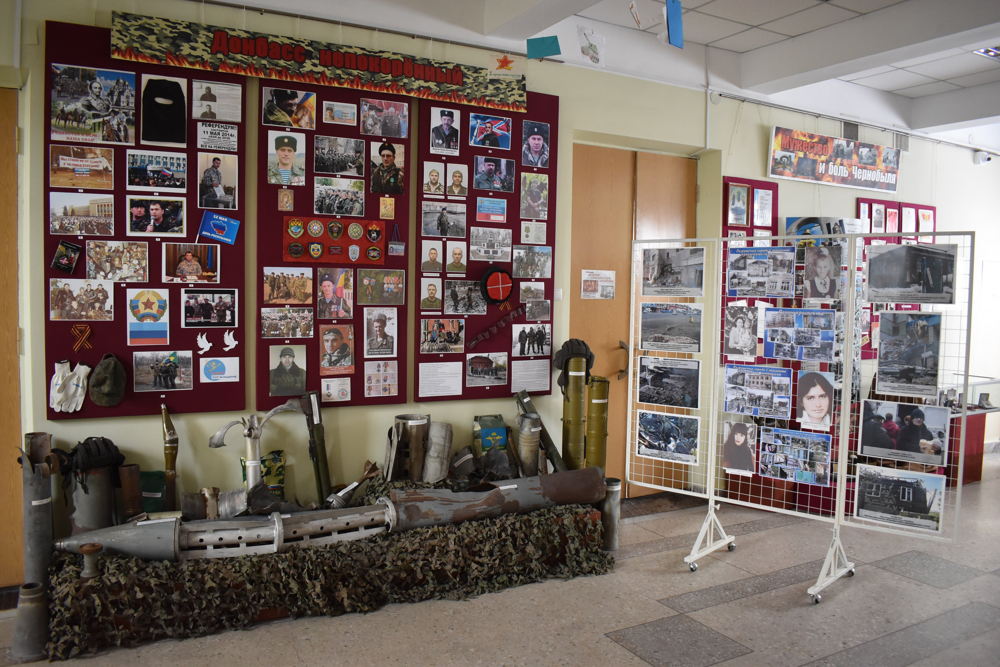
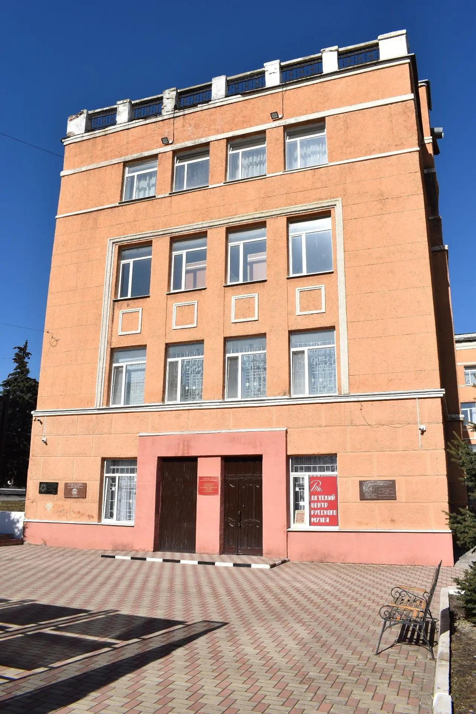
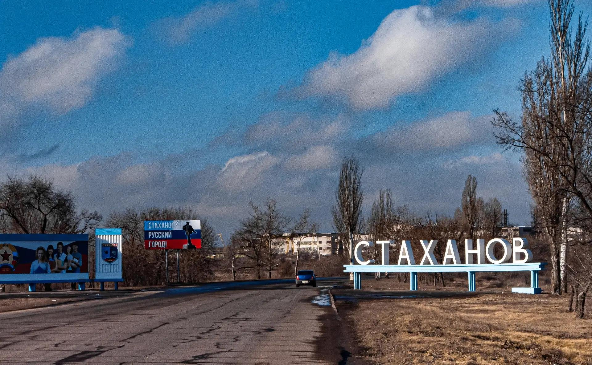
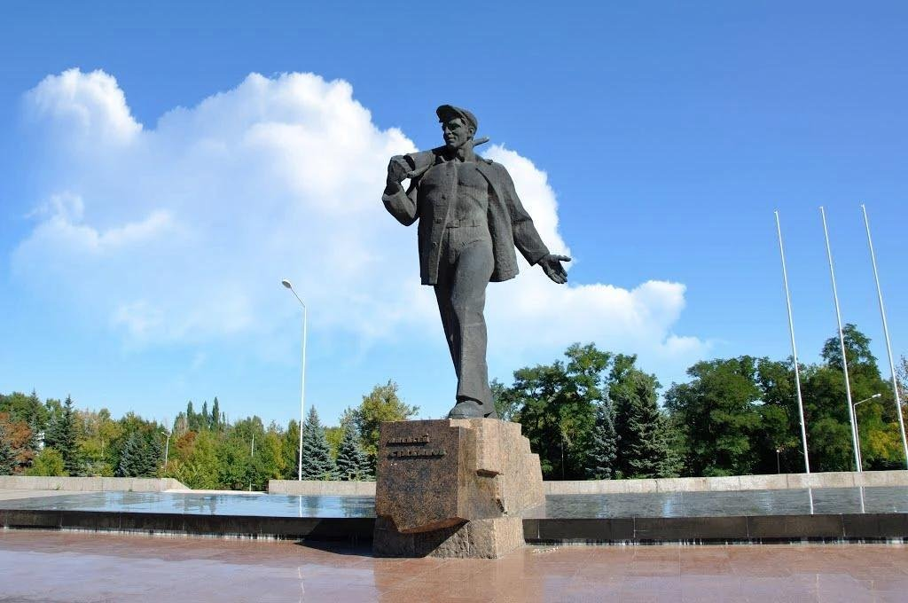
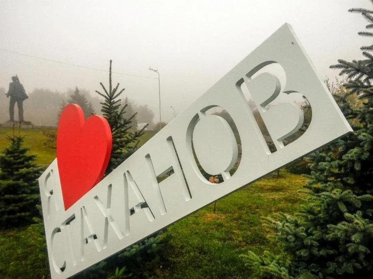

Ждём вас в музее
Адрес из профиля музея: г. Стаханов, ул. Кирова, 30. Перед визитом уточните условия по телефону.
Подготовить заявку на экскурсию ↗Место встречи с историей города, его жителями и художественным наследием. Откройте знакомые страницы по-новому — в залах музея и онлайн.

Музей в городе СтахановеСамое важное перед визитом — в одном месте.
Адрес из профиля музея: г. Стаханов, ул. Кирова, 30. Перед визитом уточните условия по телефону.
Подготовить заявку на экскурсию ↗По информации из профиля музея: вторник — суббота, 10:00–16:00; воскресенье и понедельник — выходные. В праздничные дни расписание может меняться.
Укажите стоимость входных билетов, категории посетителей с правом на льготу и порядок подтверждения льгот.
[Добавить прейскурант и основания льгот]Выберите формат и удобную дату — сотрудник музея подтвердит возможность посещения.
Дата и время в заявке — пожелание, а не подтверждённое бронирование. Список реальных программ и расписание добавляются после согласования с музеем.
Демонстрационный режим: отправка заявок пока не подключена. Форму можно заполнить и скопировать текст для обращения.
От истории городских улиц до произведений художников и семейных архивов.
Личные истории, документы и предметы повседневности помогают увидеть, как менялся Стаханов.
История промышленного труда через судьбы людей, фотографии, воспоминания и музейные предметы.
Живопись, графика и декоративно-прикладное творчество — взгляд на город глазами художников.
Мы предлагаем рассказывать историю города через музейные предметы, архивные свидетельства и судьбы его жителей.
Этот раздел познакомит с учреждением, его собранием, сотрудниками и исследовательской работой. Даты основания, количественные показатели и официальные сведения публикуются только после проверки по документам музея.
Каждая фотография, письмо и картина — начало разговора о городе, который мы помним и продолжаем создавать.
Пример редакционного текста для главной страницыСнимки из материалов, переданных для проекта. Подписи описывают только видимое на изображениях; даты съёмки и сведения о предметах уточняются.








Для школьников, семей, педагогов и всех, кому интересны история и искусство.
Рабочее пространство для педагогов, исследователей, краеведов и семейных архивов.
Здесь собраны методические материалы, исследовательские маршруты и инструкции по работе с историческими источниками. После согласования музей сможет публиковать собственные проверенные материалы и правила доступа к фондам.
Искусствоведение и история города — через наблюдение, вопросы и игру.
Попробуйте собрать изображение из фрагментов. Игра уже есть в проекте и доступна в двух режимах.
Три вопроса о жанре, композиции и музейной атрибуции. Учимся внимательно смотреть на произведение.
По каким источникам изучают прошлое города? Найдите ответы и соберите собственный маршрут исследователя.
Шаблоны публикаций для будущей редакции сайта — без вымышленных дат и анонсов.
Адрес и телефоны приведены по публичному профилю музея; перед визитом уточните их актуальность.
Адрес: ЛНР, г. Стаханов, ул. Кирова, 30
Телефоны: 8 (5744) 4-09-44; 8 (5744) 4-31-77
Страницы музея: ВКонтакте ↗ · Одноклассники ↗ · MAX ↗
Оценка работы: Пройти анкету ↗